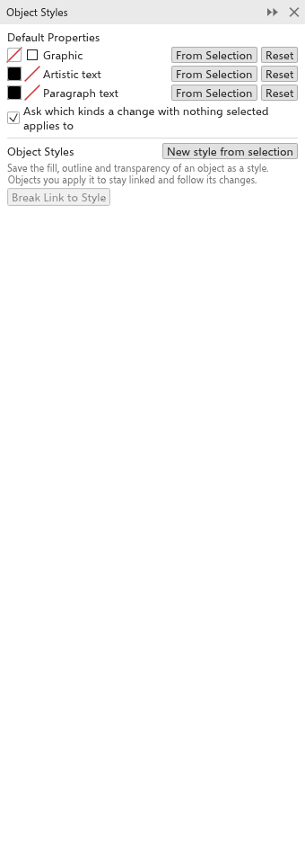
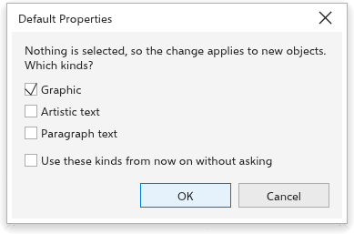

Estilos de objeto e propriedades padrão
O painel Estilos de objeto tem duas partes: as Propriedades padrão dos novos objetos e os estilos do desenho. As duas são salvas com o desenho. Abra-o em Janela > Painéis, ou clique com o botão direito em um objeto e escolha o painel de estilos de objeto.

Propriedades padrão
Novos objetos recebem o preenchimento e o contorno do seu tipo:
| Tipo | Em um desenho novo |
|---|---|
| Gráfico: formas, linhas, tabelas e tudo menos texto | sem preenchimento, um contorno preto fino |
| Texto artístico: texto sem moldura | preenchimento preto, sem contorno |
| Texto de parágrafo: texto em uma moldura | preenchimento preto, sem contorno |
No painel, cada tipo mostra o preenchimento e o contorno, com Da seleção (pega o preenchimento e o contorno do objeto selecionado) e Redefinir (volta aos padrões de um desenho novo).
Mudar os padrões sem nada selecionado
Quando nada está selecionado e você escolhe um preenchimento ou contorno (clica em uma cor da paleta, usa uma ferramenta de preenchimento, muda a cor ou a largura do contorno), a mudança vale para os novos objetos. O TraceDraw pergunta a quais tipos de novos objetos ela se aplica:
- Marque Gráfico, Texto artístico e Texto de parágrafo conforme necessário. Os tipos marcados da última vez vêm marcados.
- Marque Usar estes tipos daqui em diante sem perguntar para pular a pergunta daqui em diante.
- Clique em OK. Cancelar não muda nada.

A caixa Perguntar a quais tipos vale uma alteração sem seleção no painel ativa ou desativa a pergunta. O painel Propriedades sem nada selecionado também edita os padrões de Gráfico. Para manter os padrões em todo desenho novo, escolha Ferramentas > Salvar configurações como padrão.
Estilos
Um estilo é um conjunto com nome de propriedades: Preenchimento, Contorno (cor, largura, estilo de linha e setas) e Transparência. Os objetos a que você dá um estilo continuam ligados a ele: mude o estilo e todos mudam.
Para criar um estilo
- Selecione um objeto com a aparência desejada.
- Clique em Novo estilo a partir da seleção.
O estilo recebe o nome "Estilo 1" e assim por diante, pega o preenchimento, o contorno e a transparência do objeto e fica ligado a todos os objetos selecionados.
Usar e mudar estilos
Cada estilo mostra as amostras, o nome (clique para renomear), quantos objetos estão ligados a ele e as partes como caixas de seleção:
- Aplicar dá o estilo à seleção e a liga a ele.
- Atualizar a partir da seleção pega o preenchimento, o contorno e a transparência do objeto selecionado; todo objeto ligado acompanha.
- Desmarcar uma parte deixa essa propriedade a cargo de cada objeto.
- Excluir remove o estilo; os objetos ligados mantêm a aparência.
- Desvincular do estilo desliga os objetos selecionados, que mantêm a aparência.
Você ainda pode mudar um objeto ligado diretamente; a próxima mudança do estilo volta a aplicar as partes dele. Clique com o botão direito em um objeto para aplicar um estilo pelo menu.